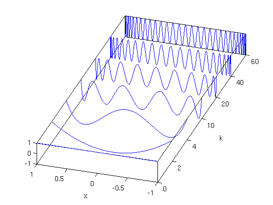

Chebyshev polynomials as plotted by Higham and Higham
Nick Trefethen, 13th December 2011
(Chebfun example approx/ChebPolysHigham.m)
On p. 259 of their Matlab Guide, 2nd ed. [1], Higham and Higham present an attractive 3D plot of several Chebyshev polynomials. Here is their plot reproduced in Chebfun.
k = [0 2 4 10 20 40 60]; x = chebfun('x'); one = 1 + 0*x; LW = 'linewidth'; FS = 'fontsize'; fs = 14; for j = 1:length(k) plot3(j*one,x,chebpoly(k(j)),LW,1.6), hold on end box on set(gca,'dataaspectratio',[1 0.75 4]), view(-72,28) set(gca,'xticklabel',k) xlabel('k',FS,fs), ylabel('x',FS,fs), set(gca,FS,fs) h = get(gca,'xlabel'); set(h,'position',get(h,'position')+[1.5 0.1 0]) h = get(gca,'ylabel'); set(h,'position',get(h,'position')+[0 0.25 0])
Reference:
[1] D. J. Higham and N. J. Higham, Matlab Guide, 2nd ed., SIAM, 2005.